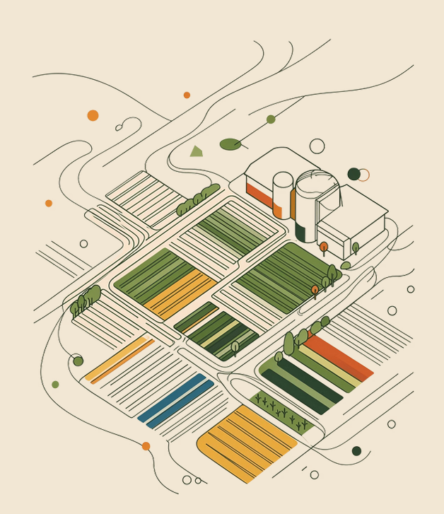
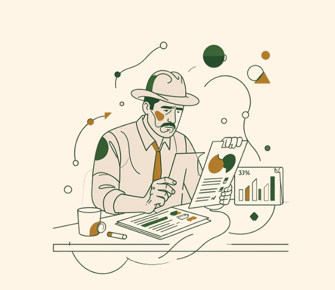

Cultivos
El campo, lote por lote
- Campos, lotes y ciclos de cultivo.
- Labores con el costo de insumos, maquinaria y mano de obra.
- Inventario de insumos y de granos.
- Calendario de tareas, finanzas y reportes.
Gestión agropecuaria en la nube
Controlá toda tu empresa agropecuaria en un solo lugar. Operación, costos e inventario, con los módulos que activás.

El problema
Excel, cuadernos de campo, WhatsApp y aplicaciones sueltas. Ninguno habla con el otro.
No sabés cuánto costó cada labor, cada hectárea ni cada ciclo productivo.
Insumos, granos y animales, sin saber qué entra, qué sale y qué falta.
Dueño, agrónomo, encargado y administración ven números distintos.
Si tenés cultivos y animales, usás dos sistemas. O ninguno.
Si no cambia

Cuando tenés los números, ya pasó la campaña.
Si no podés explicar el número, no podés mejorarlo.
Compras de más, faltantes críticos, dinero atrapado.
Conciliando datos, buscando en WhatsApp, rearmando reportes.
La solución
Una plataforma en la nube para la empresa agropecuaria real. Operación, economía e inventario juntos.
Entrás desde el navegador. Sin servidores propios ni instalaciones.
Cultivos, porcinos, avícola, feedlot y lechería. Activás lo que usás y sumás el resto cuando hace falta.
Cada labor desglosada en insumos, maquinaria y mano de obra.
Qué se registra
Una sola plataforma, con el detalle de cada rubro. Usuarios, roles y permisos se administran en el mismo lugar.
El campo, lote por lote
Engorde a corral
Trazabilidad del ciclo
Crianza, huevos y ponedoras
Ordeñe y venta de leche
La plataforma
Cada empresa tiene su estructura, sus usuarios y sus datos.
Dueño, administración y campo entran con su usuario. El permiso se valida en el servidor.
Insumos, alimentos y sanidad. Un solo lugar para saber qué tenés.
La configurás según tu maquinaria, tus prácticas y tu operación. No al revés.
Geolocalizás lotes y ves el clima del establecimiento para decidir con el dato a mano.
Por qué importa
Datos confiables, costos que se entienden, un equipo que habla el mismo idioma.
Una sola fuente de verdad.
El costo se puede explicar.
Todos miran el mismo número.
Para quién
Necesitás el orden de la operación y un costo que se pueda explicar.
Buscás trazabilidad y datos que coincidan con lo que pasó en el campo.
Registrás labores, insumos, aplicaciones y el avance de cada lote.
Varios lotes, más de una persona en el sistema, o campo y animales en la misma empresa.
Varias unidades, roles distintos, cultivos y ganadería juntos, y reportes en un solo lugar.
Demo
Charla de 30 minutos para ver si AgroCloud encaja en tu explotación. Recorremos el flujo que te importa: un cultivo con su labor y sus costos, o el módulo animal que ya estás trabajando.
Entrar al sistema